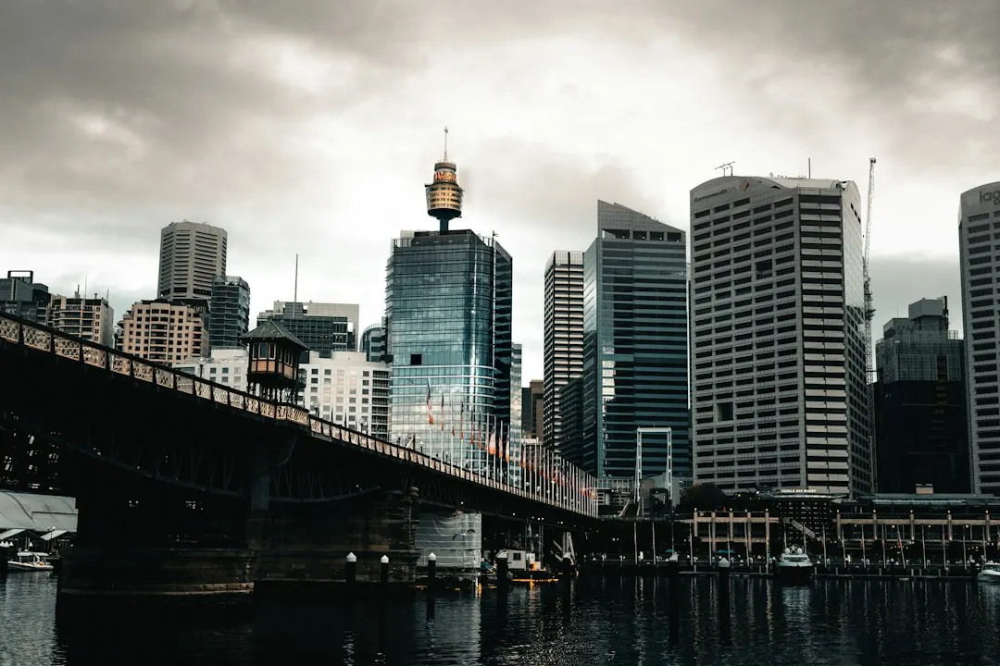

Older Sydney homes with ceramic fuses, frequent tripping, scorch marks, buzzing or burning smells may need more than a targeted repair. A full replacement can involve circuit breakers, safety switches, testing and a Certificate of Compliance for Electrical Work. Quote scope may change if the board has asbestos or mica backing, defective consumer mains, meter box issues or three phase supply. Check future solar, battery, EV charger or renovation loads before choosing the work.
For homeowners comparing switchboard replacement sydney options, the practical decision is whether the board needs a targeted safety improvement, a full replacement, or preparation for a higher electrical load.
Switchboard Replacement Sydney Explained
The published guidance from Switchboard Upgrades Sydney identifies several signs worth recording before an electrician assesses the board. These include rewireable ceramic fuses that blow often, circuit breakers that trip, scorch marks, buzzing, a burning smell, or a crowded layout.
Look only at what is visible and note which circuit is affected, how often the issue occurs, and whether the problem appeared after a new appliance was installed. A dark backing panel behind old fuses is also relevant because older boards may use asbestos or mica backing. Do not disturb the panel. Include the observation in the enquiry so the licensed electrician can determine the appropriate next step.
- Record ceramic fuses, missing safety switches and crowded components.
- Note tripping, buzzing, warm spots, scorch marks or burning smells.
- Describe the property type, suburb and electrical issue when requesting an assessment.
Choose between a targeted fix and replacement
Not every board needs the same scope. A safety switch installation may address a specific protection need, while surge protection is a separate addition. A fuse box replacement changes an old ceramic fuse arrangement to a modern board with circuit breakers and safety switches.
A full switchboard replacement is broader. It may include new breakers, safety switches, testing and the compliance certificate. The right comparison is therefore not simply the cheapest quote. Ask what condition the existing enclosure, meter panel, consumer mains and supply arrangement are in, and which parts of the proposed work are essential now.
If a smaller repair is proposed, ask whether it leaves enough space and capacity for the equipment you already use. A targeted fix can be reasonable where the existing board remains suitable, but it may be poor value if a replacement is likely to be needed once the board is opened.
Plan for solar, batteries, EVs and renovations
Air conditioning, induction cooking, batteries, solar equipment and electric vehicle chargers can place different demands on a board than the lighting and basic appliances common in older homes. Before committing to new equipment, ask whether there is spare circuit space and whether the home's supply capacity is adequate.
The same question applies to a renovation. Tell the electrician what is planned, even if the work is not immediate. The board can then be assessed for the load the home is expected to carry, rather than only the appliances connected on the day.
Three phase supply is not automatically the answer. The available service describes both three phase upgrades and larger single phase boards, so ask which arrangement matches the property's equipment and future plans. A solar-ready upgrade may also involve a different scope from a standard replacement.
Understand why Sydney quotes differ
Two homes with similar-looking boards can require different work once the enclosure is opened. The main scope variables identified in the published guide are asbestos or mica backing panels, consumer mains, meter box defects and three phase supply. These can affect the work required, coordination and the timing of a power outage.
Ask each electrician to separate the base board work from possible additional items. The quote should make clear whether it includes safety switches, circuit breakers, surge protection, meter panel work, consumer mains, testing and the Certificate of Compliance for Electrical Work.
Where meter or supply work is involved, the local electricity distribution network may need to be coordinated. Ask who handles that coordination, what access is required, and when power is expected to be unavailable. Those questions make quotes easier to compare without assuming that every property has the same connection arrangement.
Who this guide applies to
This guide is for Sydney homeowners and occupants assessing an older switchboard, planning additional electrical equipment, or comparing the scope of a proposed upgrade. It is especially relevant where the home was built before the 1980s and still has ceramic fuses, or where the board has started tripping or showing visible signs of deterioration.
It does not determine whether a particular board is safe or compliant. Electrical work should be assessed and completed by someone holding the required NSW electrical licence. The completed work is tested and certified with a Certificate of Compliance for Electrical Work, and the certificate is lodged through the Building Commission NSW eCert portal with a copy provided to the customer.
- Inspect from a safe distance. Record visible fuses, breakers, warning signs and the circuit affected without disturbing the board or backing panel.
- List present and future loads. Write down major equipment already used and any planned solar, battery, EV charger or renovation.
- Request comparable scope. Ask for the board condition, proposed work, possible extras, testing, certification and outage arrangements in writing.
- Check the completion documents. Confirm that the completed electrical work is tested and accompanied by a Certificate of Compliance for Electrical Work.
| Option | Usually considered when | Questions to ask |
|---|---|---|
| Safety switch installation | The board needs added circuit protection | Which circuits are covered, and is the existing board otherwise suitable? |
| Fuse box replacement | Ceramic fuses remain in an older board | Are the enclosure, backing panel and consumer mains suitable for replacement? |
| Full switchboard replacement | The board is ageing, crowded or unsuitable for planned loads | What testing, safety switches, breakers and certification are included? |
| Three phase or solar-ready upgrade | Future equipment may need additional supply or circuit capacity | Is the supply arrangement adequate for the planned equipment? |
Common questions
Does an older Sydney home automatically need a full replacement? No. The condition of the board and the home's electrical requirements determine the scope. Ceramic fuses, frequent tripping, visible damage or planned high-load equipment are reasons to arrange an assessment.
What signs should be mentioned in an enquiry? Mention blown rewireable fuses, frequent trips, scorch marks, buzzing, burning smells, warm spots, missing safety switches and a crowded layout. Also identify a dark backing panel without touching it.
Why might a quote change after inspection? Asbestos or mica backing panels, consumer mains, meter box defects and three phase supply can change the work required once the board is opened.
Is a safety switch installation the same as a full replacement? No. Adding safety switches is a targeted job. A full replacement may also involve the board, circuit breakers, testing and certification.
What should be checked before adding an EV charger or solar system? Ask whether the board has spare circuit space and enough supply capacity for the planned equipment. Include batteries, renovations and other major loads in that discussion.
This guide covers visible warning signs, upgrade choices, quote variables, future electrical loads and NSW completion documentation for Sydney switchboards.